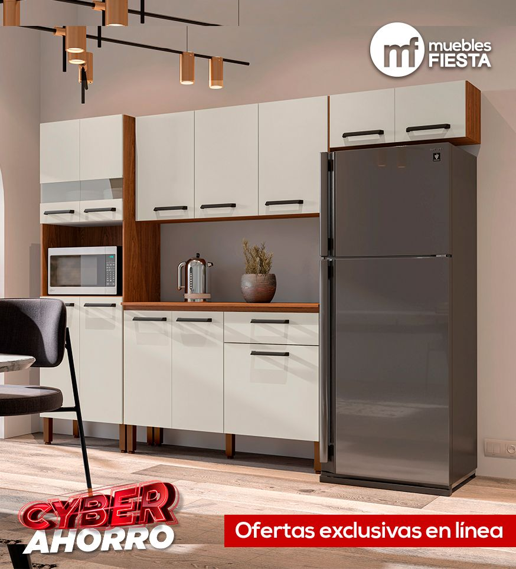
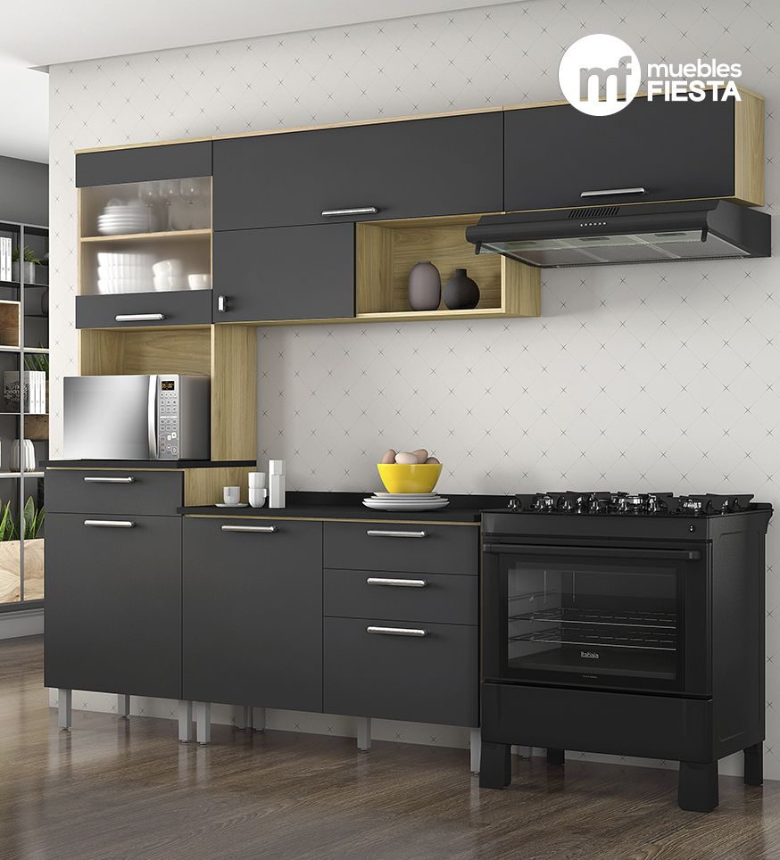
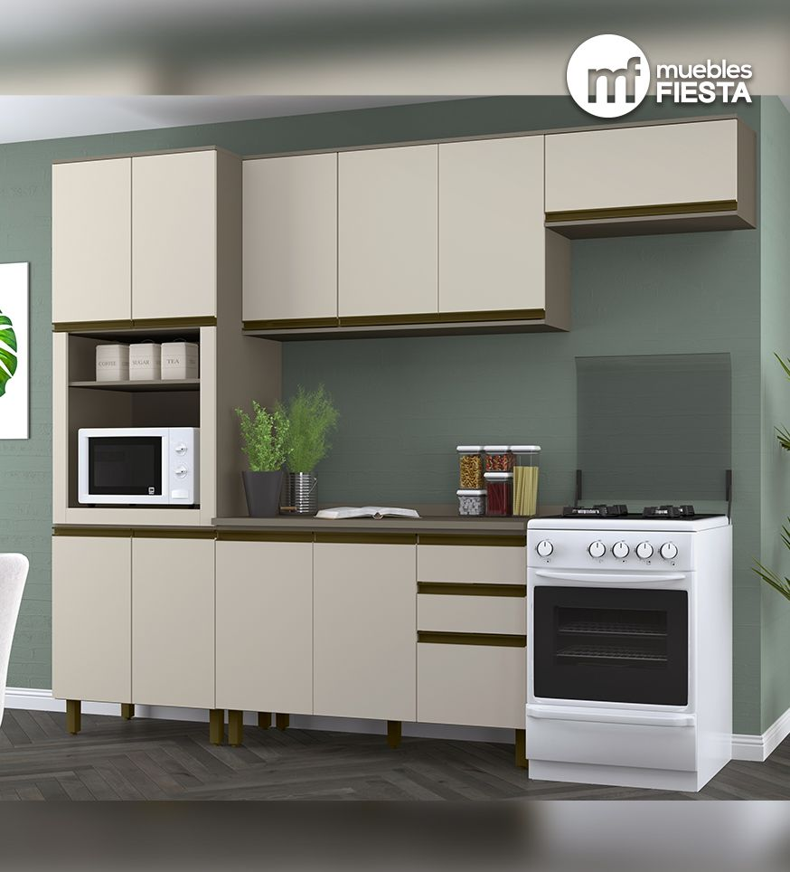
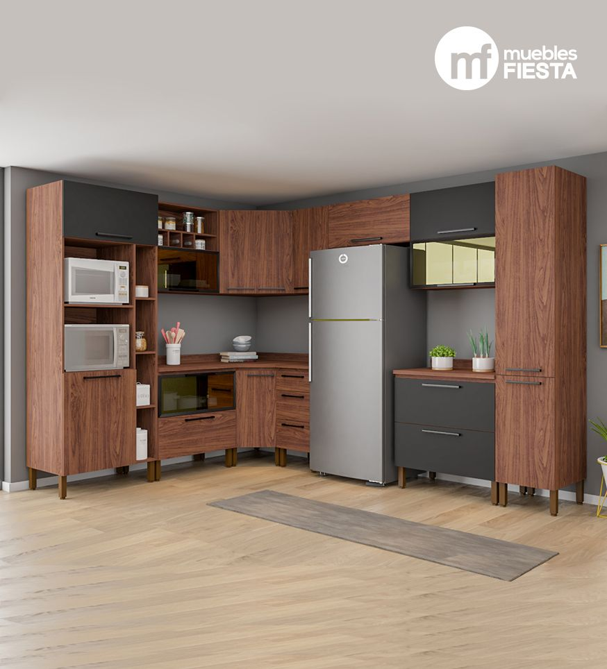

Los muebles de cocina sirven para mejorar los espcios relacionados con la gastronomia.
Precio de Contado
Q5,449.00
Hermosa cocina compacta ideal para espacios pequeños.
Precio de Contado
Q8,399.00
¡Cocina moderna y práctica! Este estilo te encantará, cuenta con puerta corrediza con diseño moderno y funcional para un día a día más práctico, sus cajones son más grandes para mejor organización, manijas ergonómicas de aluminio para mayor durabilidad. Sus puertas superiores de vidrio templado y los nichos decorativos darán a tu ambiente un estilo moderno y lleno de funcionalidad.
Precio de Contado
Q8,599.00
¡Cocina moderna y práctica! Este estilo te encantará, cuenta con espacio para microondas y alacena, tiene un diseño moderno y funcional para un día a día más práctico, sus cajones son más grandes para mejor organización, manijas ergonómicas de aluminio para mayor durabilidad. Sus puertas superiores de vidrio templado y los nichos decorativos darán a tu ambiente un estilo moderno y lleno de funcionalidad.
Precio de Contado
Q23,449.00
Una increible cocina, unica e sutipo que te dara los lujos que nadie más podria.
